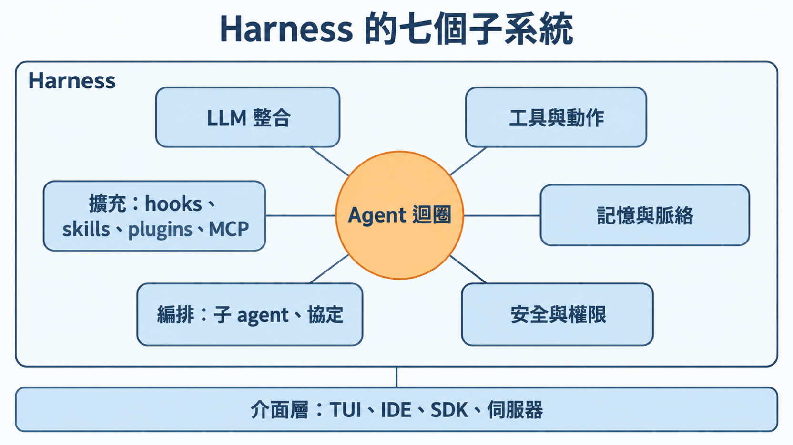
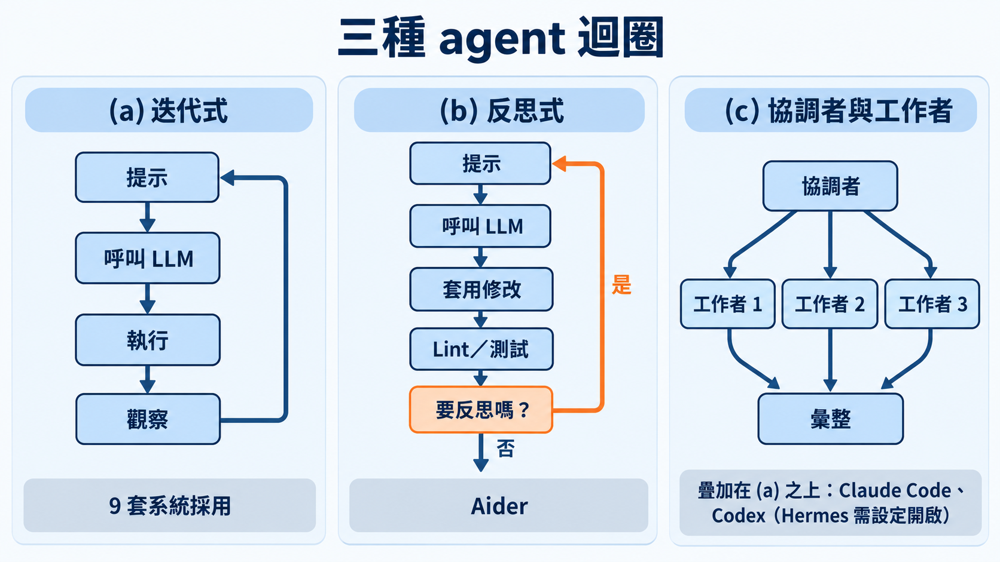
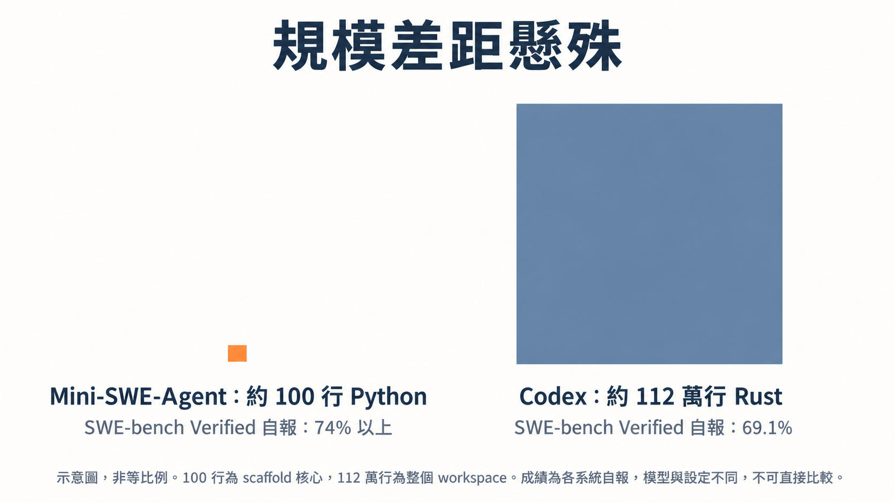
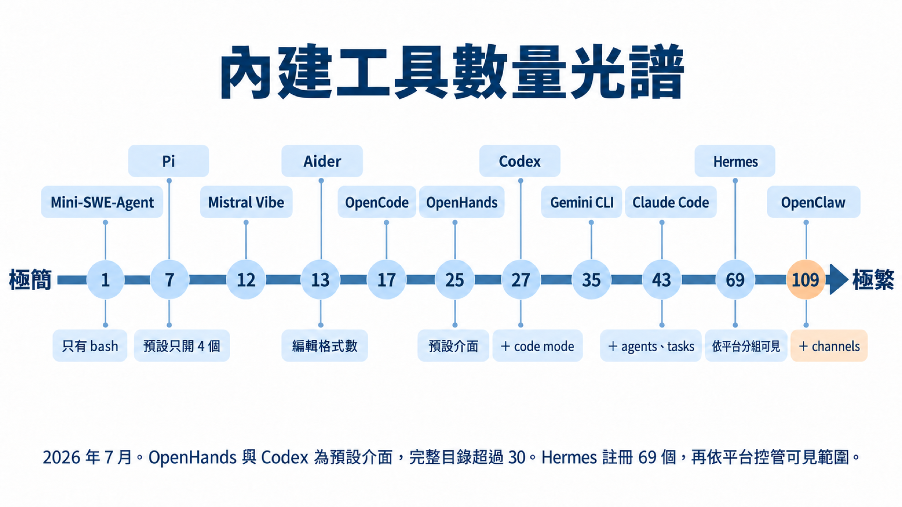
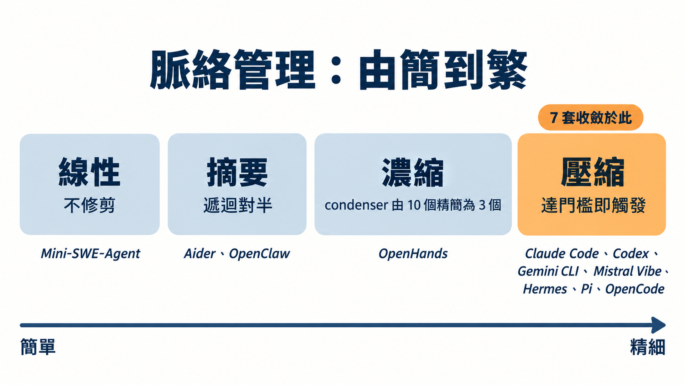
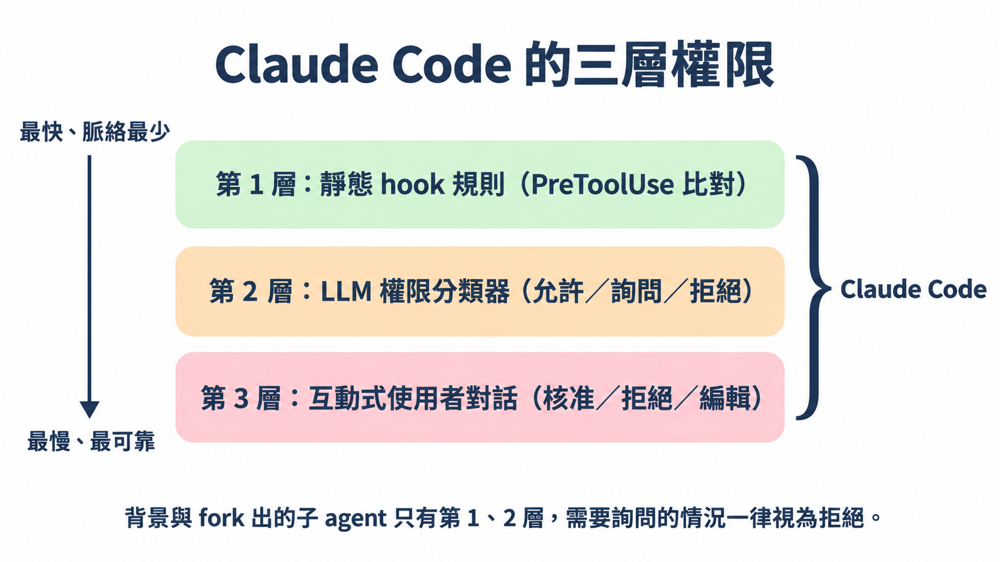
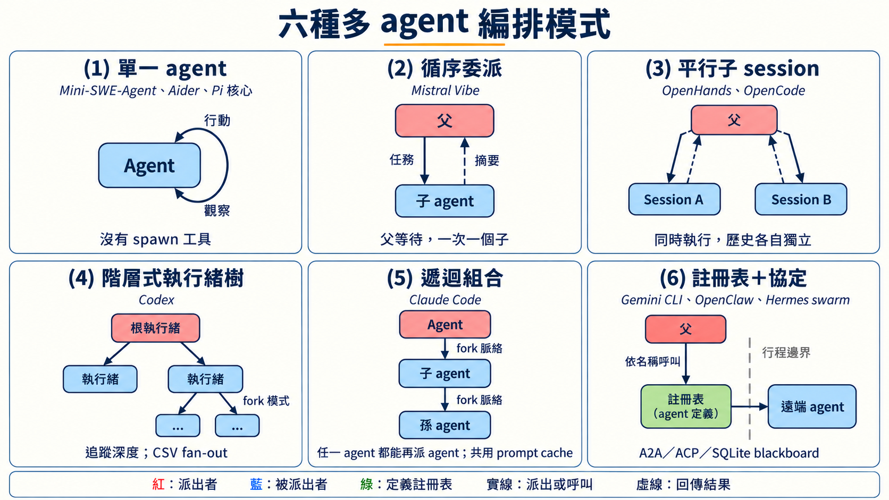
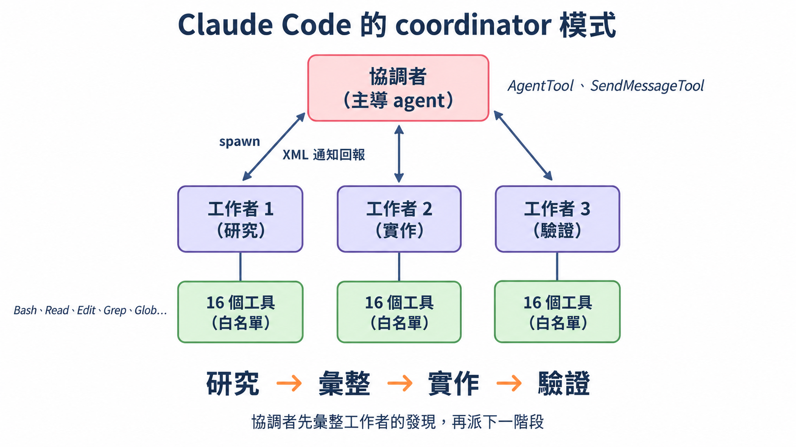
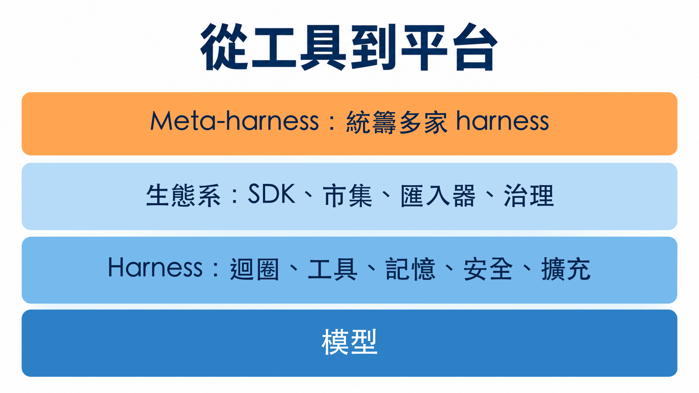

先問一個問題：你每天用的 agent，到底是什麼？
用 Claude Code、Codex CLI 或 Gemini CLI 寫程式時，多數人腦中的畫面是「一個很聰明的模型」。這篇論文要你換一個畫面：模型只是其中一半。
作者群沿用的定義很短：agent ＝ 模型 ＋ harness，這條等式由 LangChain 的 Trivedy 在 2026 年初推廣開來。Harness 就是模型以外的所有東西：迴圈怎麼跑、能呼叫哪些工具、對話內容怎麼取捨、哪些指令需要人點頭、能不能派出子 agent、怎麼外掛新功能。這篇論文就是以這個定義為起點，去拆解真實的 harness。
這篇論文從哪來
Harness engineering 這個詞很新。論文的說法是，2026 年 2 月它才開始流通：Mitchell Hashimoto 先在文中順口提到，LangChain 的 Trivedy 隨後把它定義並展開。接著四月有 Böckeler 寫給 coding agent 使用者的指南，六月有 O’Reilly 與獨立作者的整理，學術界也跟上，出現自動演化 harness 的研究，以及給 harness 下操作型定義的論文。論文引言形容，短短五個月，它從廠商部落格的一個用語，長成了有實務指南、正式定義與自動化系統的領域。
缺的是一份依據真實原始碼的參考。論文認為既有文獻各有缺口：benchmark 調查只報分數（多半是 SWE-Bench），不談架構；概念分類只描述模式，沒有實作對照；唯一同期的原始碼分類，把各家原廠的系統排除在外。迴圈怎麼組、工具怎麼定義與隔離、安全怎麼執行、脈絡怎麼配給，這些決定一套 harness 可不可靠、好不好擴充的工程選擇，在論文看來，既有文獻都還沒碰到。作者群因此直接讀 11 套系統的原始碼，並在引言先亮出論點：harness 已經從工具變成平台。
論文是 2026 年 7 月 15 日放上 arXiv 的預印本（cs.SE），第一作者 Paul Barbaste，作者群來自 Inclusive Brains 與 Wavestone AI Lab。它有一個四月的前一版，其中 8 套系統在七月重新取樣，所以後面才有「同一批系統，隔了一季改了什麼」的比較。
這篇導讀照論文的脈絡走：先看它怎麼切這個物件，再看最讓人意外的幾個發現，最後談你拿回去能用什麼。
這篇論文怎麼做的，以及它沒做什麼
先交代研究的邊界，後面的數字才讀得準。
| 項目 | 內容 |
|---|---|
| 研究對象 | 11 套 harness：Claude Code、Codex CLI、Gemini CLI、Mistral Vibe、OpenHands、Aider、Mini-SWE-Agent、Hermes、Pi、OpenCode、OpenClaw；另以 Databricks 的 Omnigent 作為「meta-harness」對照。其中 OpenClaw 是多通路的個人助理 gateway，沒有自己的改檔工具，論文把它當非 coding 的對照點，採用率的數字有時會另報排除它的 10 套版本 |
| 方法 | 讀原始碼，固定在 2026 年 7 月的版本；其中 8 套在 4 月也讀過，因此能比較一季之間的變化 |
| 規模 | 約 400 萬行 Python、TypeScript、Rust |
| 沒做的事 | 不跑 benchmark、不排名；作者明說「描述與比較怎麼建造，不比誰強」 |
兩個限制要先記著。第一，Claude Code 的分析根據的是 2026 年 3 月流傳的原始碼快照，不是官方釋出版本，作者自己也說這是可重現性最弱的一環。第二，論文引用的跑分都是各系統自己報的，模型和設定不同，作者特別聲明不做直接比較。
把 harness 拆成七塊
論文最實用的貢獻是一張地圖。每個系統，從最小的到最大的，都得對同樣七件事表態，哪怕表態是「刻意不做」。

| 子系統 | 管什麼 | 最小的做法 | 最大的做法 |
|---|---|---|---|
| Agent loop | 推論與動作交替，何時停 | Mini-SWE-Agent：一個 while 迴圈、一個 bash 工具 | OpenHands：事件溯源的對話引擎，可平行執行工具 |
| LLM 整合 | 跟模型供應商溝通、快取、路由 | 一次 LiteLLM 呼叫 | Hermes：五套自有傳輸層、29 個供應商設定檔 |
| 工具 | 能做什麼，尤其是怎麼改檔 | 只有 bash | Claude Code：43 個型別化工具，延遲載入 |
| 記憶與脈絡 | 配給 context window、跨 session 保存 | 無限累加歷史 | Codex：由 agent 自己維護的跨 session 記憶 |
| 安全與權限 | 什麼能跑、什麼要問、怎麼隔離 | 花費與步數上限 | Codex：規則引擎＋LLM 審核＋三平台 OS 沙盒 |
| 編排 | 派子 agent、串接其他 agent | Aider：沒有，刻意單 agent | Claude Code：遞迴組合 |
| 擴充 | hooks、skills、plugins、MCP | Python protocol | Pi：一切皆擴充 |
這張表值得多看兩眼。「最小」那一欄幾乎都是同一個名字，Mini-SWE-Agent，這引出後面的發現。
迴圈的三種長相
七塊裡最核心的是 agent 迴圈：模型推論與動作執行輪流進行，直到任務結束。論文指出 11 套全都是 ReAct 模式的變形，差別在複雜度、平行度和狀態管理，歸納成三種。

- (a) 迭代式：提示、呼叫 LLM、執行、觀察，再回到提示。9 套系統採用，包括 OpenHands、Claude Code、Codex、Gemini CLI、Mistral Vibe、Mini-SWE-Agent、Hermes、Pi 與 OpenCode。
- (b) 反思式：Aider 在套用修改後跑 lint 與測試，再決定要不要反思重來。Hermes 把類似的功能放進迴圈的停止條件裡。
- (c) 協調者與工作者：疊加在 (a) 之上，由協調者派出多個工作者，再彙整結果。Claude Code 與 Codex 有明確規範的做法，Hermes 則由設定開關控制。
另一篇同期的原始碼分類研究（Rombaut）提醒，實際上線的迴圈多半是幾種基本做法組合出來的。論文自己補了一個例子：四套廠商原生系統都提供的 plan mode，就是把先規劃再執行的做法嫁接在 ReAct 上。
迴圈外面還有一圈。OpenHands 的 /goal 端點會讓 LLM 評審檢查每次執行的結果，決定重送還是停止；Hermes 的 verify-on-stop 守衛可以否決迴圈自己的結束。這兩個功能存在的唯一目的，就是在內層迴圈外再套一圈。論文把這條接縫連到 2026 年 6 月出現的「loop engineering」說法：harness engineering 蓋的是內層的動作與觀察循環，loop engineering 則是從外面把它組成能自己運轉、不必每一輪都靠人下指令的外層迴圈。
地板很低：一百行，對一百一十萬行
論文第 2.4 節指出，Mini-SWE-Agent 用約 100 行 Python 實作了全部七個子系統：一個迴圈、一個模板、一個工具、一份訊息清單、兩個上限。它自報在 SWE-bench Verified 上拿到 74% 以上，Codex 自報 69.1%。要留意口徑：100 行是 Mini-SWE-Agent 的 scaffold 核心，整個套件約 5K 行；Codex 的 112 萬行則是整個 workspace。
先別急著下結論。作者在第 13.4 節寫得很清楚：這兩個數字用的模型、設定、有沒有沙盒都不同，「我們不從中得出直接對比的結論」。他們只拿來說明一件事：Codex 多出來的程式碼，相當大一部分沒有花在「把任務做完」的邏輯上。
那花在哪？作者的清單是：安全（跨平台沙盒）、使用體驗（終端介面、串流）、可擴充性（MCP、外掛）、穩健性。Observation 1 還給了一個很具體的例子：OpenCode 的非測試程式碼，大約五分之三是 TUI、網頁、桌面與 SDK 這些用戶端，Codex 七月的程式樹裡有「再也不會被 benchmark 量到」的即時語音層。Codex 在一季內從約 62 萬行長到約 112 萬行 Rust（126 個 crate），新增的內容包括記憶、審核機制、外掛市集、code mode 與即時語音。

論文第 15.5 節把這個現象整理成一個「還沒被驗證的直覺」：scaffold 越複雜，任務成功率的曲線大概是凹的，起初幾個結構（一個 bash 工具、一個讀寫工具、一個 Markdown 脈絡檔）讓成功率快速上升，之後再加的東西主要換來安全與體驗，對完成率的幫助有限。作者明說這是待檢驗的假說。
另一個與這個直覺相容、但不足以證實它的結果來自別人的研究：論文引用的 Lin 等人的自動演化 harness，從只有 bash 的種子出發，達到 71.9%（SWE-bench Verified），消融實驗顯示工具（+3.3 個百分點）、中介層（+2.2）、長期記憶（+5.6）有貢獻，單改 system prompt 反而下降 2.3 個百分點。這是第二手轉述，數字以原論文為準。
工具數量把這條光譜呈現得更直接。

Mini-SWE-Agent 只有 1 個 bash，Claude Code 有 43 個，Hermes 註冊了 69 個，OpenClaw 則在 109 個以上。這些數字要小心讀：Aider 的 13 是編輯格式數，不是工具數；Pi 做了 7 個，預設只開 4 個；Hermes 的 69 個會再依平台分組控管可見範圍；OpenHands 與 Codex 標的是預設介面，完整目錄都超過 30 個。論文在這方面的建議（Rec. 3、4）是先只給 bash，看到實際的失敗模式再加工具，超過約 15 個就改用延遲載入。圖上 Codex、Claude Code、OpenClaw 旁的「＋ code mode」「＋ agents、tasks」「＋ channels」，是原圖標註的額外工具類別。
兩個「缺席」：沒有框架，也沒有向量檢索
這是整篇最容易被拿來引用的發現。
在 11 套系統、約 400 萬行程式碼裡：
- 沒有任何一套在 agent runtime 裡使用通用 agentic 框架。LangChain、LangGraph、AutoGen、CrewAI 都沒有；連 Gemini CLI 也沒用 Google 自己的框架。每個迴圈都是用該語言的非同步原語手刻的。
- 沒有任何一套用向量嵌入（embedding）檢索程式碼。大家用的是 ripgrep、tree-sitter、glob，以及自動發現的 Markdown 脈絡檔（CLAUDE.md、AGENTS.md 之類）。
這個結果有點反直覺，因為一般 LLM 應用的主流文獻通常把 RAG 與框架當成標配。作者的解釋是複雜度預算不同：當失敗的後果是改壞真實的程式碼時，可除錯、提示詞透明的價值，勝過框架帶來的重用。
這個發現有幾個該保留的但書。第一，作者檢查的是依賴清單與 import 的 grep，重複做了兩次、相隔三個月；他們沒追蹤內部 fork、動態載入的外掛或轉譯後的發行版。邊界案例也存在：論文把 OpenCode 內層管線使用的一套 provider 抽象 SDK 稱為最接近邊界的例子。論文原話是：如果有公司在某條沒檢查到的路徑上用了 LangChain，「我們會驚訝，但不會震驚」。第二，「沒有向量檢索」限定於程式碼；OpenClaw 的預設設定對聊天紀錄用了混合嵌入，Hermes 則用 SQLite 全文檢索處理對話層級的回憶。
歷史怎麼解釋這件事
第 14.2 節給了一個有意思的說法：harness 沒有採用框架，是把框架取代了。證據是雙向的：Claude Agent SDK 把 Claude Code 變成可 import 的函式庫；OpenAI 在 Codex 的 repo 裡出了 SDK；另一頭，LangChain 自己做了 Deep Agents 這個 harness，結果自行採用了這群 harness 的慣例（SKILL.md、AGENTS.md、子 agent、待辦清單）。於是「該用哪個 agent 框架？」變成了「你已經在跑哪個 harness？」。
擴充標準塵埃落定：Skills 超車 MCP
2026 年這一季，擴充層的格局清楚了：
- SKILL.md：11 套中有 9 套實作（只有 Aider 與 Mini-SWE-Agent 沒有）。
- MCP：8 套。四月時兩者打平，Pi 採取「實作 skills、明確拒絕 MCP」的立場，讓天平傾斜。
- ACP（Agent Client Protocol）：6 套。它原本是編輯器與 agent 之間的協定，現在多了第三個用途：讓 OpenHands 把 Claude Code、Codex 或 Gemini CLI 當成可互換的後端來跑。
Skills 這一層也在長出生態系：四套系統有託管的 registry，Hermes 有信任分級與隔離，OpenClaw 有來源驗證，還出現了第一批由 agent 自己寫出來的 skill（Hermes 的自我改進迴圈、Gemini CLI 的擷取收件匣）。
論文的實務建議（Recommendation 14）因此是：能力模板、工作流程、領域知識交給 Skills，對外部服務的整合才用 MCP，順序也照這樣排。
脈絡管理：壓縮成了事實標準，差別轉到記憶怎麼寫入
Context window 有限，harness 得決定怎麼配給。論文把做法依複雜度排成四級。

- 線性：完全不修剪，Mini-SWE-Agent 只是一直累加歷史。
- 摘要：論文把 Aider 與 OpenClaw 歸在這一級。以 Aider 為例，歷史超過上限就依 token 數切成兩半，保留較新的一半，較舊的一半交給 LLM 摘要，必要時遞迴處理。
- 濃縮：OpenHands 的 condenser 在 V0 有十個實作，V1 SDK 精簡成三個，作者說多數特化版本證明不必要。
- 壓縮：token 用量達到門檻就觸發 LLM 摘要。四套廠商原生 harness 加上這一版新增的 Hermes、Pi、OpenCode，共 7 套收斂在這裡，論文稱它是事實標準。不過三套新來的各自混入了其他策略的特色，例如逐步合併摘要、可抽換的引擎、以 session 樹當基底。
壓縮既然趨同，前沿就換了地方。Observation 5 指出，現在拉開差距的是「記憶怎麼寫進去」，論文看到四種治理模型並存：
- 由 agent 自己維護：Codex 讓沙盒內的子 agent 在有 git 基線的儲存區上整併記憶。
- 人工把關：Gemini CLI 的擷取子 agent 把內容寫進待審收件匣，使用者用
/memory審過才算數。 - 模型直接寫，但有上限：Hermes 使用字元數受限的 Markdown 快照，每個 session 凍結一份以維持快取；OpenHands 與 Claude Code 走脈絡檔慣例。
- 回覆前先做 agentic 回想：OpenClaw 的 Active Memory 子 agent。
另外，11 套之中沒有任何一套把嵌入式檢索當成主要的記憶基底，前面「缺席」的發現從程式碼延伸到了記憶；Hermes 的 SQLite 全文檢索，是上線系統裡最進階的做法。
沙盒做不做，看取捨，跟規模無關
四月版論文看到最大的兩套系統（Codex 與 Gemini CLI）恰好都有跨平台 OS 沙盒，因此推論「大系統自然會做沙盒」。七月把樣本擴大後，這個推論被作者自己推翻：Hermes 與 OpenCode 一樣龐大，卻完全沒有 OS 層隔離。
它們把安全預算花在別處。Hermes 把容器隔離交給六種可抽換的執行後端，自己投入在提示注入（prompt injection）掃描、skills 供應鏈把關，以及即使開了 --yolo 也不會解除的指令底線。OpenCode 走的是政策路線，用 tree-sitter 解析指令語法來決定授權範圍。Pi 則明確拒絕做半套沙盒，理由是部分的行程內沙盒「容易被誤解為安全邊界」。
唯一沒變的是成本面：自己做 OS 沙盒要花數千行的投入，而且連 Omnigent 這種上層的 meta-harness 也得在自己那一層再付一次同樣的帳。
OS 沙盒之外，權限也可以分層。論文用 Claude Code 示範一種設計。

第 1 層是靜態的 hook 規則，用 PreToolUse 做比對，最快、用到的脈絡也最少。第 2 層是 LLM 權限分類器，輸出允許、詢問或拒絕。第 3 層才跳出對話框，讓使用者核准、拒絕或編輯，最慢，也最可靠。背景執行與 fork 出來的子 agent 只有前兩層，原本該跳對話框的情況一律視為拒絕；系統還會統計每個 session 的拒絕次數，累積到 N 次後退回成詢問。作者把它放在「純自動化與人工監督之間」。這一段依據的是前面提過的 Claude Code 原始碼快照。
編排：多 agent 的六種形狀
論文說 11 套裡有 9 套支援多 agent 執行（Pi 的子 agent 放在擴充空間），做法分歧得最厲害，因此這個面向寫得最細。它把做法歸成六類。

- 單一 agent：Mini-SWE-Agent、Aider，以及 Pi 的核心。
- 循序委派：Mistral Vibe。父 agent 等待，一次只有一個子 agent。
- 平行子 session：OpenHands 與 OpenCode。子 session 同時執行，歷史各自獨立。
- 階層式執行緒樹：Codex。追蹤深度，還能用 CSV 做 fan-out。
- 遞迴組合：Claude Code。任何 agent 都能再派 agent，子 agent 以 fork 繼承脈絡並共用 prompt cache。
- 註冊表加協定：Gemini CLI（具名的 agent 定義，遠端 agent 走 A2A）、OpenClaw（ACP session spawn），以及 Hermes 的 swarm（行程之間用 SQLite blackboard 溝通）。
Observation 7 的重點是：四套廠商原生系統，加上 OpenHands、Hermes、OpenCode 與 OpenClaw，共 8 套各自開發，卻都走向「協調者派工、工作者執行」的階層形狀，作者視為趨同演化的證據；Pi 是刻意只做單 agent 的反例。形狀相同，各家最佳化的目標卻不一樣：
| 系統 | 最佳化的方向 | 做法 |
|---|---|---|
| Claude Code | 成本 | fork 脈絡，子 agent 共用 prompt cache |
| Codex | 隔離與規模 | 追蹤深度的執行緒樹，加上 CSV fan-out |
| Gemini CLI | 可攜性 | 本地與遠端用對稱的 session 協定 |
| Mistral Vibe | 簡單 | 子 agent 在行程內循序執行 |
| Hermes | 控管 | 工具集取交集，預設擋掉遞迴 |
Claude Code 的 coordinator 模式把這個形狀畫得最清楚。

啟用後（透過環境變數或功能開關），由主導 agent 擔任協調者，派出分別負責研究、實作、驗證的工作者。工作者只拿到 16 個工具的白名單，並以 XML 通知回報。協調者先彙整工作者的發現，再派下一階段，流程是研究、彙整、實作、驗證。
Anthropic 自己在多 agent 研究系統的文章裡提醒過，多 agent 系統耗用的 token 約是單次聊天的 15 倍（比較對象是單純的聊天，不是優化過的單 agent 流程），而且寫程式的任務，可以真正平行的部分比研究少。論文細看之後發現，各系統的多 agent 多半用在「廣度優先的探索階段」，例如平行調查程式碼庫，不是平行實作，這與那個提醒並不衝突。Rec. 12 的建議也由此而來：先走單 agent，除非你指得出一個明確的廣度優先探索階段，平行隔離確實勝過序列搜尋，才改用多 agent。
從工具到平台
論文的主論點放在第 14 節：2026 上半年，coding harness 從工具變成了平台。作者列出的證據，每一項都能對到具體的程式碼或套件：

- 擴充基底趨同：hooks 成為主流擴充方式（11 套中 9 套）。Codex 直接沿用 Claude Code 的 hook 事件名稱，一字不改。
- 轉換成本與搬家工具：Codex 內建匯入器，能偵測
~/.claude/projects的 session，轉成自己的格式，還能把 Claude Code 的設定翻譯成 Codex 的設定檔。反方向，OpenCode 會讀 Claude Code 的 skills 目錄，OpenHands 讀它的外掛格式。 - 治理層：Codex 的設定堆疊往上延伸到 MDM 管理與企業雲端下發的規則。
- agent 變成可定址的服務：OpenHands 提供 OpenAI 相容的端點，任何會呼叫 chat-completions 的工具都能驅動一個 agent；OpenCode 內建 HTTP 伺服器與 OpenAPI 規格，每個介面（TUI、網頁、IDE）都只是它的用戶端。
- meta-harness：Databricks 的 Omnigent 在上層統籌 23 個 harness 轉接器，加上跨 harness 的政策、統一沙盒與可共享的 session，但它不實作自己的編輯迴圈。
這一季的觀察還有一條很有趣的線：趨同變成了模仿。四月時，各家的共同點多半是各自獨立發現的；七月時，跨系統的血緣已經寫進原始碼註解，例如 Hermes 的原始碼註解標明編輯比對器參考 OpenCode、審核機制參考 Codex。作者估計，一項競爭優勢在這個領域的半衰期目前可以用週來計算。另一個同期的變化是，行為規範正從提示詞的文字搬到設定檔：Codex 新一代的模型提示詞拿掉了不自動 commit 與不要過度加料的規則，改用功能旗標控制，Mistral Vibe 也刪掉了原本的「Never Commit」硬規則。作者的解讀是，模型逐漸內化了規範，加上 harness 長出治理介面，政策便從「模型讀到的地方」移到「平台執行的地方」。
對應到 Observation 12 的結論：這個領域的競爭單位，已經從 agent 迴圈轉到迴圈周邊的生態系介面。
如果你要自己做一個：十八條建議怎麼讀
第 16 節把觀察濃縮成 18 條建議，每條都連到一個觀察與一套實作它的系統。完整清單請看原文，這裡挑幾條最能代表整篇精神的：
- 從線性 while 迴圈開始，直到出現互不相關的每回合政策，才改成中介層管線（Rec. 1）。
- 先只給 bash 工具，看到實際失敗模式再加（Rec. 3）；工具超過約 15 個再考慮延遲載入（Rec. 4）。
- 別對程式碼做 RAG，用 ripgrep、glob、tree-sitter 與檔案系統遍歷（Rec. 8）。
- 單 agent 先行，除非你能指出一個明確的廣度優先探索階段，平行隔離確實勝過序列搜尋（Rec. 12）。
- 開 ACP 伺服器，但自己的子 agent 留在行程內（Rec. 13）。
- 安全規則寫成資料或專用政策檔，不要寫成命令式程式碼；就算提供 YOLO 模式，底下也要有一道底線（Rec. 11）。
論文附了一份約 90 行的 Python 最小可用 harness（Listing 3），直接實作其中 10 條。作者對它的期待寫得很節制：他們「猜測，但沒有證明」這個 scaffold 配上前沿模型，成績會追平 Mini-SWE-Agent；要再往上走，主要是模型能力的問題。
讀這篇論文要留的幾個心眼
- 這是結構性的描述，沒有效能排名。要拿它來選工具，只能看架構取捨，看不出誰比較快、誰比較準。
- 數量類的主張會過期，結構類的主張比較耐用。作者自己這樣整理：工具數量、功能欄位、版本號幾週就變，迴圈分類、子系統解剖、兩個缺席則在三個月重驗後依然成立。四月版有三項觀察在七月被當場修訂，這本身是個誠實的訊號。
- 受檢系統的架構與 Anthropic 的工程文章高度相符，但因果還不清楚。Observation 10 指出，Anthropic 在 2024 年底到 2025 年九月發表的四篇工程文章，與四套各自獨立開發的廠商原生系統架構吻合。這是共同的現實、公開指南的影響，還是兩者兼有，作者列為開放問題，也沒有做過訪談。
- 市場事件不要照單全收。論文第 3.7 節提到的併購、產品改名、服務終止等消息，作者在註腳說明取自廠商公告與儲存庫資料，沒有經過原始碼驗證。本文不採用這些事件。
實際啟示
如果你是使用者：下次比較 agent 工具時，把問題從「哪個模型比較強」改成「哪個 harness 的取捨符合我的情境」。要安全隔離、要企業治理、要最大彈性、要最輕量，會得到不同答案。你寫的 CLAUDE.md、AGENTS.md、SKILL.md，在這篇論文的語言裡就是你在這個平台上寫的「程式」，而且這些檔案格式正在跨工具通用，累積的投資有一定的可攜性。
如果你是開發者：先抄那個 90 行的骨架，用 bash＋讀寫＋唯一子字串取代，加上 AGENTS.md 發現與閾值壓縮。每加一個東西，先說得出它對應的失敗模式。
如果你在評估要不要導入某個框架：先回頭看那兩個缺席。11 套正式營運的系統都沒用，不等於你不能用，但代表你需要一個比「大家都這樣」更具體的理由。
來源清單
- 主要來源：Barbaste, P., Darrigol, T., Vu, G., Wiltberger, T. Harness Engineering: Anatomy, Architecture, and Evolution of Coding Agents – A Source-Code Study of Eleven Systems. arXiv:2609.00006v1，2026-07-15，CC BY 4.0。
- 文中對應的論文位置：定義與子系統（第 2 節）、方法與樣本（第 4 節）、Observation 1–13（分見各章）、平台化（第 14 節）、討論與有效性威脅（第 15 節）、設計建議與 Listing 3（第 16 節）。
- 圖像：七張主要圖表依論文 Figure 1–7 的內容重新繪製成繁體中文（Figure 1 子系統、Figure 2 迴圈、Figure 3 工具數量、Figure 4 脈絡管理、Figure 5 權限分層、Figure 6 多 agent 模式、Figure 7 coordinator 模式）；規模對照與四層堆疊兩張為本導讀自製。
- 數字來源說明：SWE-bench Verified 成績為各系統自報（論文第 5 節註腳）；Lin 等人的 71.9% 為論文轉述其研究，原文獻為論文參考文獻 [85]。